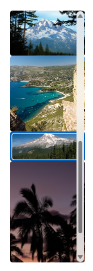
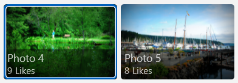
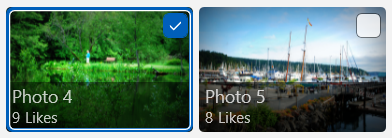
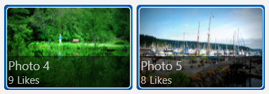

Items view
Use an items view to display a collection of data items, such as photos in an album or items in a product catalog.
The items view is similar to the list view and grid view controls, and you can use it in most cases where you would use those controls. One advantage of the items view is its ability to switch the layout on the fly while preserving item selection.
The items view control is built using the ItemsRepeater, ScrollView, ItemContainer, and ItemCollectionTransitionProvider components, so it offers the unique ability to plug in custom Layout or ItemCollectionTransitionProvider implementations. The item view's inner ScrollView control allows scrolling and zooming of the items. It also offers features unavailable in the ScrollViewer control used by the list view and grid view, like the ability to control the animation during programmatic scrolls.
Like the list view and grid view controls, the items view can use UI and data virtualization; handle keyboard, mouse, pen, and touch input; and has built-in accessibility support.
Is this the right control?
Use an items view to:
- Display a collection where all of the items should have the same visual and interaction behavior.
- Display a content collection with the ability to switch between list, grid, and custom layouts.
- Accommodate a variety of use cases, including the following common ones:
- Storefront-type user interface (i.e. browsing apps, songs, products)
- Interactive photo libraries
- Contacts list
Create an items view
- Important APIs: ItemsView class, ItemsSource property, ItemTemplate property, LinedFlowLayout, StackLayout, UniformGridLayout
The WinUI 3 Gallery app includes interactive examples of most WinUI 3 controls, features, and functionality. Get the app from the Microsoft Store or get the source code on GitHub
An ItemsView can show a collection of items of any type. To populate the view, set the ItemsSource property to a data source.
Note
Unlike other collection controls (those that derive from ItemsControl), ItemsView does not have an Items property that you can add data items to directly.
Set the items source
You typically use an items view to display data from a source such as a database or the internet. To populate an items view from a data source, you set its ItemsSource property to a collection of data items.
Set ItemsSource in code
Here, the ItemsSource is set in code directly to an instance of a collection.
// Data source.
List<String> itemsList = new List<string>();
itemsList.Add("Item 1");
itemsList.Add("Item 2");
// Create a new ItemsView and set the data source.
ItemsView itemsView1 = new ItemsView();
itemsView1.ItemsSource = itemsList;
// Add the ItemsView to a parent container in the visual tree.
rootGrid.Children.Add(itemsView1);
Bind ItemsSource in XAML
You can also bind the ItemsSource property to a collection in XAML. For more info, see Data binding with XAML.
Important
When you use the x:Bind markup extension in a DataTemplate, you have to specify the data type (x:DataType) on the data template.
Here, the ItemsSource is bound to a collection of custom data objects (of type Photo).
<ItemsView ItemsSource="{x:Bind Photos}">
</ItemsView>
public sealed partial class MainPage : Page
{
public MainPage()
{
this.InitializeComponent();
Photos = new ObservableCollection<Photo>();
PopulatePhotos();
}
public ObservableCollection<Photo> Photos
{
get; private set;
}
private void PopulatePhotos()
{
// Populate the Photos collection.
}
}
public class Photo
{
public BitmapImage PhotoBitmapImage { get; set; }
public string Title { get; set; }
public int Likes { get; set; }
}
Specify the look of the items
By default, a data item is displayed in the items view as the string representation of the data object it's bound to. You typically want to show a more rich presentation of your data. To specify exactly how items in the items view are displayed, you create a DataTemplate. The XAML in the DataTemplate defines the layout and appearance of controls used to display an individual item. The controls in the layout can be bound to properties of a data object, or have static content defined inline. The DataTemplate is assigned to the ItemTemplate property of the ItemsView control.
Important
The root element of the DataTemplate must be an ItemContainer; otherwise, an exception is thrown. ItemContainer is an independent primitive control that is used by ItemsView to show the selection states and other visualizations of an individual item in the item collection.
In this example, the DataTemplate is defined in the Page.Resources ResourceDictionary. It includes an Image control to show the picture and an overlay that contains the image title and number of likes it's received.
<Page.Resources>
<DataTemplate x:Key="PhotoItemTemplate" x:DataType="local:Photo">
<ItemContainer AutomationProperties.Name="{x:Bind Title}">
<Grid>
<Image Source="{x:Bind PhotoBitmapImage, Mode=OneWay}"
Stretch="UniformToFill" MinWidth="70"
HorizontalAlignment="Center" VerticalAlignment="Center"/>
<StackPanel Orientation="Vertical" Height="40" Opacity=".75"
VerticalAlignment="Bottom" Padding="5,1,5,1"
Background="{ThemeResource SystemControlBackgroundBaseMediumBrush}">
<TextBlock Text="{x:Bind Title}"
Foreground="{ThemeResource SystemControlForegroundAltHighBrush}"/>
<StackPanel Orientation="Horizontal">
<TextBlock Text="{x:Bind Likes}"
Style="{ThemeResource CaptionTextBlockStyle}"
Foreground="{ThemeResource SystemControlForegroundAltHighBrush}"/>
<TextBlock Text=" Likes"
Style="{ThemeResource CaptionTextBlockStyle}"
Foreground="{ThemeResource SystemControlForegroundAltHighBrush}"/>
</StackPanel>
</StackPanel>
</Grid>
</ItemContainer>
</DataTemplate>
</Page.Resources>
<Grid x:Name="rootGrid">
<ItemsView ItemsSource="{x:Bind Photos}" Width="480" Height="400"
ItemTemplate="{StaticResource PhotoItemTemplate}">
</ItemsView>
</Grid>
Here's what the item layout defined by the data template looks like.
Change the layout of items
When you add items to an ItemsView control, it automatically wraps each item in an ItemContainer and then lays out all of the item containers. How these item containers are laid out depends on the Layout property of the control.
You can modify the layout of items by adjusting the properties on the current layout, or you can completely replace the current layout with a different layout. You can use one of the layouts described next, or you can derive a custom layout from the Layout class.
StackLayout
By default, ItemsView uses a StackLayout, which produces a vertical list, shown here with default property settings and a simple image template.

This XAML sets the spacing between items in the StackLayout to 5px.
<ItemsView ItemsSource="{x:Bind Photos}" Width="480" Height="400"
ItemTemplate="{StaticResource PhotoItemTemplate}">
<ItemsView.Layout>
<StackLayout Spacing="5"/>
</ItemsView.Layout>
</ItemsView>
StackLayout provides properties to control:
- whether the layout is vertical or horizontal (Orientation)
- the spacing of items (Spacing)
You can use the layout in combination with the ItemTemplate to give your collection a variety of looks to suit your needs. For example, the WinUI Gallery sample changes the ItemTemplate used with the StackLayout to look like this.

LinedFlowLayout
The LinedFlowLayout positions elements sequentially from left to right, then top to bottom, in a wrapping layout. Use this layout to display an item collection where the items have a fixed height but a variable width. We recommend it for image based collections. This layout also has built-in animations that play when the collection has items added or removed, and when the view is resized.
Here's an items view that shows a collection of photos in a lined flow layout.
<ItemsView Width="500" Height="400" HorizontalAlignment="Left"
ItemTemplate="{StaticResource LinedFlowLayoutItemTemplate}">
<ItemsView.Layout>
<LinedFlowLayout ItemsStretch="Fill"
LineHeight="160"
LineSpacing="5"
MinItemSpacing="5"/>
</ItemsView.Layout>
</ItemsView>
LinedFlowLayout provides properties to control:
- the size and spacing of items (LineHeight, LineSpacing, MinItemSpacing)
- the arrangement of items (ItemsJustification, ItemsStretch)
UniformGridLayout
The UniformGridLayout positions elements sequentially from left to right or top to bottom (depending on the Orientation) in a wrapping layout. Each item is the same size.
Here's an items view that shows a collection of photos in a uniform grid layout.
<ItemsView ItemsSource="{x:Bind Photos}" Width="480" Height="400"
ItemTemplate="{StaticResource PhotoItemTemplate}">
<ItemsView.Layout>
<UniformGridLayout MaximumRowsOrColumns="3"
MinRowSpacing="5"
MinColumnSpacing="5"/>
</ItemsView.Layout>
</ItemsView>

UniformGridLayout provides properties to control:
- whether the layout is row or column based (Orientation)
- the number of rows or columns (MaximumRowsOrColumns)
- the size and spacing of items (MinItemHeight, MinItemWidth, MinColumnSpacing, MinRowSpacing)
- the arrangement of items (ItemsJustification, ItemsStretch)
Tip
Use the interactive demo in the WinUI 3 Gallery app to see the effect of these properties in real time.
Item selection and interaction
You can choose from a variety of ways to let users interact with an items view. By default, users can select a single item. You can change the SelectionMode property to enable multi-selection or to disable selection. You can set the IsItemInvokedEnabled property so that users click an item to invoke an action instead of selecting the item.
This table shows the ways a user can interact with an items view, and how you can respond to the interaction.
| To enable this interaction: | Use these settings: | Handle this event: | Use this property to get the selected item: |
|---|---|---|---|
| No interaction | SelectionMode="None" IsItemInvokedEnabled="False" |
N/A | N/A |
| Single selection | SelectionMode="Single" IsItemInvokedEnabled="False" |
SelectionChanged | SelectedItem |
| Multiple selection | SelectionMode="Multiple" IsItemInvokedEnabled="False" |
SelectionChanged | SelectedItems |
| Extended selection | SelectionMode="Extended" IsItemInvokedEnabled="False" |
SelectionChanged | SelectedItems |
| Click | SelectionMode="None" IsItemInvokedEnabled="True" |
ItemInvoked | N/A |
Note
You can enable IsItemInvokedEnabled to raise an ItemInvoked event while SelectionMode is also set to Single, Multiple, or Extended. If you do this, the ItemInvoked event is raised first, and then the SelectionChanged event is raised. In some cases (for example, if you go to another page in the ItemInvoked event handler), the SelectionChanged event isn't raised and the item isn't selected.
You can set these properties in XAML or in code, as shown here:
<ItemsView x:Name="myItemsView" SelectionMode="None" IsItemInvokedEnabled="True"/>
myItemsView.SelectionMode = ItemsViewSelectionMode.None;
myItemsView.IsItemInvokedEnabled = true;
Read-only
You can set the SelectionMode property to ItemsViewSelectionMode.None to disable item selection. This puts the control in read-only mode, so that it's used for displaying data, but not for interacting with it. That is, the item selection is disabled, but the control itself is not.
Note
Items can still be selected and deselected programmatically, but not through user interaction.
Single selection
This table describes keyboard, mouse, and touch interactions when SelectionMode is set to Single.
| Modifier key | Interaction |
|---|---|
| None | |
| Ctrl |
When SelectionMode is set to Single, you can get the selected data item from the SelectedItem property. If no item is selected, SelectedItem is null.
If you try to set an item that's not in the items collection as SelectedItem, the operation is ignored and SelectedItem is null.
The default selection indicator for Single selection looks like this.

Multiple selection
This table describes the keyboard, mouse, and touch interactions when SelectionMode is set to Multiple.
| Modifier key | Interaction |
|---|---|
| None | |
| Shift |
The default selection indicator for Multiple selection looks like this.

Extended selection
This table describes the keyboard, mouse, and touch interactions when SelectionMode is set to Extended.
| Modifier key | Interaction |
|---|---|
| None | Single selection. |
| Ctrl | |
| Shift |
When SelectionMode is set to Multiple or Extended, you can get the selected data items from the SelectedItems property.
The SelectedItem and SelectedItems properties are synchronized. For example, if you set SelectedItem to null, SelectedItems is empty. In multi-select mode, SelectedItem contains the item that was selected first.
The default selection indicator for Extended selection is the same as for Single selection and looks like this.

Manage item selection programmatically
Note
These selection methods ignore the SelectionMode property and have an effect even when SelectionMode is Single or None.
Sometimes, you might need to manipulate the ItemsView item selection programmatically. For example, you might display a Select all button to let users select all items in a list. In this case, it's usually not very efficient to add and remove items from the SelectedItems collection one by one. It's more efficient to use the Select, SelectAll, Deselect, and InvertSelection methods to modify the selection than to use the SelectedItems property.
Tip
You can select all items in a collection by calling the SelectAll method. There is no corresponding method to deselect all items. However, you can deselect all items by calling SelectAll followed immediately by InvertSelection.
Get the sample code
- WinUI Gallery sample - See all the XAML controls in an interactive format.